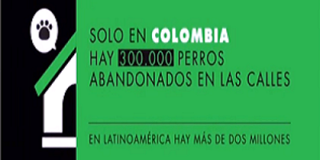

Noticias
300,000 perros abandonados y 1,000,000 de gatos en las calles. ¿Cifras espantosas verdad? El pensar que hay por cada 40 Colombianos hay una mascota en la calle nos decepciona.
Soluciones:
1- ESTERILIZAR, no solamente evitas traer mascotas indeseadas si no que le regalas calidad y le prolongas la vida a la mascota que tanto amas.
2- NO COMPRES, ADOPTA, Clasificados Mascotas, Pulgueros y todos los breeders de patio e irresponsables que se ponen a procrear mascotas de raza por el mero hecho de sacarles dinero sin importar el compromiso que debe tener cada familia con ese ser viviente. El que hayan pagado por una mascota, no la exime de ser abandonada/maltratada.
3-EDUCA, hay mucha ignorancia en cuanto al tema de esterilización, de la importancia de adoptar y en general del problema sobrepoblación de perros y gatos que hay en Colombia y en el mundo entero. Nada más en EU, 16 MILLONES son eutanizados en los diferentes albergues sin contar que otros 9 millones mueren en las calles en diferentes circunstancias.
¿Eres parte del problema o de la solución?